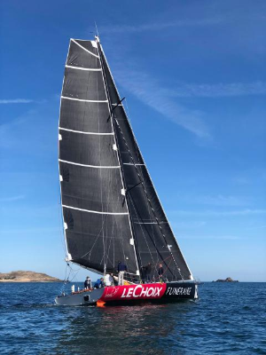
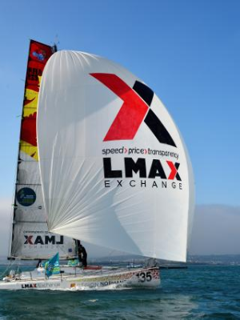

Annee de mise a l'eau : 1997
Architecte : Inconnu
Longueur : 15m
Skipper : Nils Boyer
Nils Boyer est un homme pressé.

Annee de mise a l'eau : 2014
Architecte : Finot-Conq
Longueur : 12m
Skipper : Olivier Cardin
Olivier Cardinun skipper d'expérience né à Caen